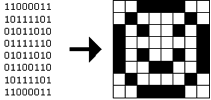

Powered by  Übersetzer
Übersetzer
This is the Hacker Edition of Problem Set 4. It cannot be submitted for credit.
Chapters 9, 11, 14, and 16 of Programming in C
* The Wikipedia articles are a bit dense; feel free to skim or skip!
You're welcome to dive into these questions on your own, but know that they're also explored in Week 4's less-comfortable section! Instead of using CS50 Run or CS50 Spaces for these questions, you'll need to use the CS50 Appliance.
Head to
https://www.edx.org/courses/HarvardX/CS50x/2012/courseware/Week_6/shorts6/
and watch the short on valgrind. Be prepared to answer the following questions!
valgrind do?valgrind?Head to
https://www.edx.org/courses/HarvardX/CS50x/2012/courseware/Week_5/shorts5/
and watch the short on Redirecting & Pipes. Be prepared to answer the following question!
printf write by default?> and >>?names.txt?You may also want to re-watch the short on GDB!
This section of questions comes with some distribution code that you'll need to download before getting started. Go ahead and execute
cd ~/Dropbox
in order to navigate to your ~/Dropbox directory. Then execute
wget http://cdn.cs50.net/2012/fall/sections/6/section5.zip
in order to download a ZIP (i.e., compressed version) of this section's distro. If you then execute
ls
you should see that you now have a file called section5.zip in your ~/Dropbox directory. Unzip it by executing the below.
unzip section5.zip
If you again execute
ls
you should see that you now also have a section5 directory. You're now welcome to delete the ZIP file with the below.
rm -f section5.zip
Now dive into that section5 directory by executing the below.
cd section5
Now execute
ls
and you should see that the directory contains the below.
buggy1 buggy2 buggy3 buggy4 cat.c buggy1.c buggy2.c buggy3.c buggy4.c cp.c
Whereas most of those are source files, buggy1, buggy2, buggy3, and buggy4 are binary files that we've compiled for you. Indeed, if you try opening the files with gedit, you'll see a bunch of binary gobbledygook.
By now, you should know what gdb is, even though you might not fully appreciate it or understand it. Time to fix!
As those programs' filenames suggest, they're a bit buggy, so your mission is to figure out why using gdb! Go ahead and execute the below.
./buggy1
What happens? How about buggy2, buggy3, and buggy4? (Recall that you can force a program to quit with ctrl-c.) Hm, not so good. Let's try to debug buggy1. Go ahead and execute the below.
gdb ./buggy1
Next, set a breakpoint at the start of main by executing
break main
at gdb's prompt. And then execute
run
at gdb's prompt to get buggy1 running. From there, see if you can figure out why buggy1 is so buggy. Odds are you'll find the following commands helpful: r(un), n(ext), p(rint), q(uit), h(elp), bt (backtrace), b(reak), u(p), d(own), and l(ist).
Once you've figured out the source of buggy1's woes, move on to buggy2, buggy3, and buggy4!
Consider these buggy programs an opportunity to practice with gdb. No need to fix any bugs; the goal is simply to identify them. You won't be asked to submit anything for these programs.
Ready to wow your friends? Impress your enemies? Get ready... and check out the below.
Your task is to implement Hacker Typer in C. When you're finished, you should have a binary executable named hacker_typer that takes in a single argument, the file to "hacker-type." Running the executable should first clear the screen (recall how we did that in Problem Set 3!) and then print out one character from the passed-in file each time the user presses a key.
Check out the stdio library to figure out which function(s) you might want to use. Keep in mind that many of the functions that return characters actually return values of type int and not of type char.
You'll also need to check out the termios library in order to stifle the character "echoes" that you normally get when you type in the terminal, since if your friends see those, they'll know that you're not actually typing out code! Additionally, the termios library will help you ensure that the stdin stream "flushes" after each key press.
Use the man pages and Google to figure out how best to manage struct termios. You'll need to use the tcgetattr and tcsetattr functions and mess with the structure's c_lflag and c_cc fields to get the job done. And remember to save a copy of your "normal" terminal settings to restore before your program exits!
Finally, if you really want a challenge, know that real h4ck3rs will code this using
cat - > hacker_typer.c
;-)
Consider this problem an opportunity to practice; you won’t be asked to submit this program.
Now that you're a master of reading files, let's add some writing into the mix. By now, you've probably had to copy a file or two using the cp command. It turns out that it's not that much more difficult to write now that you've implemented cat.
Go ahead and complete the implementation of cp.c, per the usage instructions therein, where source is the name of the file to be copied, and destination is the filename (or path) for the copy.
As with cat, you'll probably find fgetc (or fread) quite handy for reading! For writing, however, you'll now want to use fputc instead of putc, though fwrite will still work if using fread.
Thoughts on how best to test your implementation?
Consider this problem an opportunity to practice; you won't be asked to submit this program.
Welcome back!
Start up your appliance and, upon reaching John Harvard's desktop, open a terminal window (remember how?) and execute
update50
to ensure that your appliance is up-to-date!
Like Problem Set 3, this problem set comes with some distribution code that you'll need to download before getting started. Go ahead and execute
cd ~/Dropbox
in order to navigate to your ~/Dropbox directory. Then execute
wget http://cdn.cs50.net/2012/fall/psets/4/hacker4.zip
in order to download a ZIP (i.e., compressed version) of this problem set's distro. If you then execute
ls
you should see that you now have a file called hacker4.zip in your ~/Dropbox directory. Unzip it by executing the below.
unzip hacker4.zip
If you again execute
ls
you should see that you now also have a hacker4 directory. You're now welcome to delete the ZIP file with the below.
rm -f hacker4.zip
Now dive into that hacker4 directory by executing the below.
cd hacker4
Now execute
ls
and you should see that the directory contains the below.
bmp/ jpg/ questions.txt
How fun! Two subdirectories and a file. Who knows what could be inside! Let's get started.
If you ever saw Windows XP's default wallpaper (think rolling hills and blue skies), then you've seen a BMP. If you've ever looked at a webpage, you've probably seen a GIF. If you've ever looked at a digital photo, you've probably seen a JPEG. If you've ever taken a screenshot on a Mac, you've probably seen a PNG. Read up a bit on the BMP, GIF, JPEG, and PNG file formats. Then, open up questions.txt in ~/Dropbox/hacker4, as with gedit, and tell us the below.
Curl up with the article from MIT below.
http://cdn.cs50.net/2012/fall/psets/4/garfinkel.pdf
Though somewhat technical, you should find the article's language quite accessible. Once you've read the article, answer each of the following questions in a sentence or more in ~/Dropbox/hacker4/questions.txt.
Welcome to Tudor Mansion. Your host, Mr. John Boddy, has met an untimely end—he's the victim of foul play. To win this game, you must determine whodunit.
Unfortunately for you (though even more unfortunately for Mr. Boddy), the only evidence you have is a 24-bit BMP file called clue.bmp, pictured below, that Mr. Boddy whipped up on his computer in his final moments. Hidden among this file's red "noise" is a drawing of whodunit.

You long ago threw away that piece of red plastic from childhood that would solve this mystery for you, and so you must attack it as a computer scientist instead.
But, first, some background.
Perhaps the simplest way to represent an image is with a grid of pixels (i.e., dots), each of which can be of a different color. For black-and-white images, we thus need 1 bit per pixel, as 0 could represent black and 1 could represent white, as in the below. (Image adapted from http://www.brackeen.com/vga/bitmaps.html.)

In this sense, then, is an image just a bitmap (i.e., a map of bits). For more colorful images, you simply need more bits per pixel. A file format (like GIF) that supports "8-bit color" uses 8 bits per pixel. A file format (like BMP, JPEG, or PNG) that supports "24-bit color" uses 24 bits per pixel. (BMP actually supports 1-, 4-, 8-, 16-, 24-, and 32-bit color.)
A 24-bit BMP like Mr. Boddy's uses 8 bits to signify the amount of red in a pixel's color, 8 bits to signify the amount of green in a pixel's color, and 8 bits to signify the amount of blue in a pixel's color. If you've ever heard of RGB color, well, there you have it: red, green, blue.
If the R, G, and B values of some pixel in a BMP are, say, 0xff, 0x00, and 0x00 in hexadecimal, that pixel is purely red, as 0xff (otherwise known as 255 in decimal) implies "a lot of red," while 0x00 and 0x00 imply "no green" and "no blue," respectively. Given how red Mr. Boddy's BMP is, it clearly has a lot of pixels with those RGB values. But it also has a few with other values.
Incidentally, HTML and CSS (languages in which webpages can be written) model colors in this same way. If curious, see the URL below for more details.
http://en.wikipedia.org/wiki/Web_colors
Now let's get more technical. Recall that a file is just a sequence of bits, arranged in some fashion. A 24-bit BMP file, then, is essentially just a sequence of bits, (almost) every 24 of which happen to represent some pixel's color. But a BMP file also contains some "metadata," information like an image's height and width. That metadata is stored at the beginning of the file in the form of two data structures generally referred to as "headers" (not to be confused with C's header files). (Incidentally, these headers have evolved over time. This problem set only expects that you support version 4.0 (the latest) of Microsoft's BMP format, which debuted with Windows 95.) The first of these headers, called BITMAPFILEHEADER, is 14 bytes long. (Recall that 1 byte equals 8 bits.) The second of these headers, called BITMAPINFOHEADER, is 40 bytes long. Immediately following these headers is the actual bitmap: an array of bytes, triples of which represent a pixel's color. (In 1-, 4-, and 16-bit BMPs, but not 24- or 32-, there's an additional header right after BITMAPINFOHEADER called RGBQUAD, an array that defines "intensity values" for each of the colors in a device's palette.) However, BMP stores these triples backwards (i.e., as BGR), with 8 bits for blue, followed by 8 bits for green, followed by 8 bits for red. (Some BMPs also store the entire bitmap backwards, with an image's top row at the end of the BMP file. But we've stored this problem set's BMPs as described herein, with each bitmap's top row first and bottom row last.) In other words, were we to convert the 1-bit smiley above to a 24-bit smiley, substituting red for black, a 24-bit BMP would store this bitmap as follows, where 0000ff signifies red and ffffff signifies white; we've highlighted in red all instances of 0000ff.
Because we've presented these bits from left to right, top to bottom, in 8 columns, you can actually see the red smiley if you take a step back.
To be clear, recall that a hexadecimal digit represents 4 bits. Accordingly, ffffff in hexadecimal actually signifies 111111111111111111111111 in binary.
Okay, stop! Don't proceed further until you're sure you understand why 0000ff represents a red pixel in a 24-bit BMP file.
Okay, let's transition from theory to practice. Double-click Home on John Harvard's desktop and you should find yourself in John Harvard's home directory. Double-click hacker4, double-click bmp, and then double-click smiley.bmp therein. You should see a tiny smiley face that's only 8 pixels by 8 pixels. Select View > Zoom > Zoom Fit, and you should see a larger, albeit blurrier, version. (So much for "enhance," huh?) Actually, this particular image shouldn't really be blurry, even when enlarged. The program that launched when you double-clicked smiley.bmp (called Ristretto Image Viewer) is simply trying to be helpful (CSI-style) by "dithering" the image (i.e., by smoothing out its edges). Below's what the smiley looks like if you zoom in without dithering. At this zoom level, you can really see the image's pixels (as big squares).

Okay, go ahead and return your attention to a terminal window, and navigate your way to ~/Dropbox/hacker4/bmp. (Remember how?) Let's look at the underlying bytes that compose smiley.bmp using xxd, a command-line "hex editor." Execute:
xxd -c 24 -g 3 -s 54 smiley.bmp
You should see the below; we've again highlighted in red all instances of 0000ff.
In the leftmost column above are addresses within the file or, equivalently, offsets from the file's first byte, all of them given in hex. Note that 00000036 in hexadecimal is 54 in decimal. You're thus looking at byte 54 onward of smiley.gif. Recall that a 24-bit BMP's first 14 + 40 = 54 bytes are filled with metadata. If you really want to see that metadata in addition to the bitmap, execute the command below.
xxd -c 24 -g 3 smiley.bmp
If smiley.bmp actually contained ASCII characters, you'd see them in xxd's rightmost column instead of all of those dots.
So, smiley.bmp is 8 pixels wide by 8 pixels tall, and it's a 24-bit BMP (each of whose pixels is represented with 24 ÷ 8 = 3 bytes). Each row (aka "scanline") thus takes up (8 pixels) × (3 bytes per pixel) = 24 bytes, which happens to be a multiple of 4. It turns out that BMPs are stored a bit differently if the number of bytes in a scanline is not, in fact, a multiple of 4. In small.bmp, for instance, is another 24-bit BMP, a green box that's 3 pixels wide by 3 pixels wide. If you view it with Ristretto Image Viewer (as by double-clicking it), you'll see that it resembles the below, albeit much smaller. (Indeed, you might need to zoom in again to see it.)

Each scanline in small.bmp thus takes up (3 pixels) ×(3 bytes per pixel) = 9 bytes, which is not a multiple of 4. And so the scanline is "padded" with as many zeroes as it takes to extend the scanline's length to a multiple of 4. In other words, between 0 and 3 bytes of padding are needed for each scanline in a 24-bit BMP. (Understand why?) In the case of small.bmp, 3 bytes' worth of zeroes are needed, since (3 pixels) × (3 bytes per pixel) + (3 bytes of padding) = 12 bytes, which is indeed a multiple of 4.
To "see" this padding, go ahead and run the below.
xxd -c 12 -g 3 -s 54 small.bmp
Note that we're using a different value for -c than we did for smiley.bmp so that xxd outputs only 4 columns this time (3 for the green box and 1 for the padding). You should see output like the below; we've highlighted in green all instances of 00ff00.
For contrast, let's use xxd on large.bmp, which looks identical to small.bmp but, at 12 pixels by 12 pixels, is four times as large. Go ahead and execute the below; you may need to widen your window to avoid wrapping.
xxd -c 36 -g 3 -s 54 large.bmp
You should see output like the below; we've again highlighted in green all instances of 00ff00
Worthy of note is that this BMP lacks padding! After all, (12 pixels) × (3 bytes per pixel) = 36 bytes is indeed a multiple of 4.
Knowing all this has got to be useful!
Okay, xxd only showed you the bytes in these BMPs. How do we actually get at them programmatically? Well, in copy.c is a program whose sole purpose in life is to create a copy of a BMP, piece by piece. Of course, you could just use cp for that. But cp isn't going to help Mr. Boddy. Let's hope that copy.c does!
Go ahead and compile copy.c into a program called copy using make. (Remember how?) Then execute a command like the below.
./copy smiley.bmp copy.bmp
If you then execute ls (with the appropriate switch), you should see that smiley.bmp and copy.bmp are indeed the same size. Let's double-check that they're actually the same! Execute the below.
diff smiley.bmp copy.bmp
If that command tells you nothing, the files are indeed identical. (Note that some programs, like Photoshop, include trailing zeroes at the ends of some BMPs. Our version of copy throws those away, so don't be too worried if you try to copy a BMP that you've downloaded or made only to find that the copy is actually a few bytes smaller than the original.) Feel free to open both files in Ristretto Image Viewer (as by double-clicking each) to confirm as much visually. But diff does a byte-by-byte comparison, so its eye is probably sharper than yours!
So how now did that copy get made? It turns out that copy.c relies on bmp.h. Let's take a look. Open up bmp.h (as with gedit), and you'll see actual definitions of those headers we've mentioned, adapted from Microsoft's own implementations thereof. In addition, that file defines BYTE, DWORD, LONG, and WORD, data types normally found in the world of Win32 (i.e., Windows) programming. Notice how they're just aliases for primitives with which you are (hopefully) already familiar. It appears that BITMAPFILEHEADER and BITMAPINFOHEADER make use of these types. This file also defines a struct called RGBTRIPLE that, quite simply, "encapsulates" three bytes: one blue, one green, and one red (the order, recall, in which we expect to find RGB triples actually on disk).
Why are these structs useful? Well, recall that a file is just a sequence of bytes (or, ultimately, bits) on disk. But those bytes are generally ordered in such a way that the first few represent something, the next few represent something else, and so on. "File formats" exist because the world has standardized what bytes mean what. Now, we could just read a file from disk into RAM as one big array of bytes. And we could just remember that the byte at location [i] represents one thing, while the byte at location [j] represents another. But why not give some of those bytes names so that we can retrieve them from memory more easily? That's precisely what the structs in bmp.h allow us to do. Rather than think of some file as one long sequence of bytes, we can instead think of it as a sequence of structs.
Recall that smiley.bmp is 8 by 8 pixels, and so it should take up 14 + 40 + 8 ⋅ 8 ⋅ 3 = 246 bytes on disk. (Confirm as much if you'd like using ls.) Here's what it thus looks like on disk according to Microsoft:

As this figure suggests, order does matter when it comes to structs' members. Byte 57 is rgbtBlue (and not, say, rgbtRed), because rgbtBlue is defined first in RGBTRIPLE. Our use, incidentally, of the __attribute__ called __packed__ ensures that clang does not try to "word-align" members (whereby the address of each member's first byte is a multiple of 4), lest we end up with "gaps" in our structs that don't actually exist on disk.
Now go ahead and pull up the URLs to which BITMAPFILEHEADER and BITMAPINFOHEADER are attributed, per the comments in bmp.h. You're about to start using MSDN (Microsoft Developer Network)!
Rather than hold your hand further on a stroll through copy.c, we're instead going to ask you some questions and let you teach yourself how the code therein works. As always, man is your friend, and so, now, is MSDN. If not sure on first glance how to answer some question, do some quick research and figure it out! You might want to turn to the below resource as well.
http://www.cs50.net/resources/cppreference.com/stdio/
Allow us to suggest that you also run copy within gdb while answering these questions. Set a breakpoint at main and walk through the program. Recall that you can tell gdb to start running the program with a command like the below at gdb's prompt.
run smiley.bmp copy.bmp
If you tell gdb to print the values of bf and bi (once read in from disk), you'll see output like the below, which we daresay you'll find quite useful.
{bfType = 19778, bfSize = 246, bfReserved1 = 0, bfReserved2 = 0,
bfOffBits = 54}
{biSize = 40, biWidth = 8, biHeight = -8, biPlanes = 1, biBitCount = 24,
biCompression = 0, biSizeImage = 192, biXPelsPerMeter = 2834,
biYPelsPerMeter = 2834, biClrUsed = 0, biClrImportant = 0}
In ~/Dropbox/hacker4/questions.txt, answer each of the following questions in a sentence or more.
Okay, back to Mr. Boddy.
Write a program called whodunit in a file called whodunit.c that reveals Mr. Boddy's drawing.
Ummm, what?
Well, think back to childhood when you held that piece of red plastic over similarly hidden messages. (If you remember no such piece of plastic, best to ask a classmate about his or her childhood.) Essentially, the plastic turned everything red but somehow revealed those messages. Implement that same idea in whodunit. Like copy, your program should accept exactly two command-line arguments. And if you execute a command like the below, stored in verdict.bmp should be a BMP in which Mr. Boddy's drawing is no longer covered with noise.
./whodunit clue.bmp verdict.bmp
Allow us to suggest that you begin tackling this mystery by executing the command below.
cp copy.c whodunit.c
Wink wink. You may be amazed by how few lines of code you actually need to write in order to help Mr. Boddy.
There's nothing hidden in smiley.bmp, but feel free to test your program out on its pixels nonetheless, if only because that BMP is small and you can thus compare it and your own program's output with xxd during development. (Or maybe there is a message hidden in smiley.bmp too. No, there's not.)
Rest assured that more than one solution is possible. So long as Mr. Boddy's drawing is identifiable (by you), no matter its color(s), Mr. Boddy will rest in peace.
Because whodunit can be implemented in several ways, you won't be able to check your implementation's correctness with check50. And, lest it spoil your fun, the staff's solution to whodunit is not available.
In ~/Dropbox/hacker4/questions.txt, answer the question below. (And yet we used Photoshop.)
Well that was fun. Bit late for Mr. Boddy, though.
Let's have you write more than, what, two lines of code? Implement now in resize.c a program called resize that resizes 24-bit uncompressed BMPs by a factor of f. Your program should accept exactly three command-line arguments, per the below usage, whereby the first (f) must be a floating-point value in (0.0, 100.0), the second the name of the file to be resized, and the third the name of the resized version to be written.
Usage: resize f infile outfile
With a program like this, we could have created large.bmp out of small.bmp by resizing the latter by a factor of 4.0 (i.e., by multiplying both its width and it s height by 4.0), per the below.
./resize 4.0 small.bmp large.bmp
You're welcome to get started by copying (yet again) copy.c and naming the copy resize.c. But spend some time thinking about what it means to resize a BMP, particularly if f is in (0.0, 1.0). (You may assume that f times the size of infile will not exceed 232 - 1. As for f = 1.0, the result should indeed be an outfile with dimensions identical to infile's.) How you handle floating-point imprecision and rounding is entirely up to you, as is how you handle inevitable loss of detail. Decide which of the fields in BITMAPFILEHEADER and BITMAPINFOHEADER you might need to modify. Consider whether or not you'll need to add or subtract padding to scanlines.
If you'd like to check the correctness of your program with check50, you may execute the below.
check50 2012/hacker4/resize bmp.h resize.c
And if you'd like to play with the staff's own implementation of resize in the appliance, you may execute the below.
~cs50/hacker4/resize
Alright, now let's put all your new skills to the test.
In anticipation of this problem set, I spent the past several days snapping photos of people I know, all of which were saved by my digital camera as JPEGs on a 1GB CompactFlash (CF) card. (It's possible I actually spent the past several days on Facebook instead.) Unfortunately, I'm not very good with computers, and I somehow deleted them all! Thankfully, in the computer world, "deleted" tends not to mean "deleted" so much as "forgotten." My computer insists that the CF card is now blank, but I'm pretty sure it's lying to me.
Write a program in ~/Dropbox/hacker4/jpg called recover that recovers these photos.
Ummm.
Okay, here's the thing. Even though JPEGs are more complicated than BMPs, JPEGs have "signatures," patterns of bytes that distinguish them from other file formats. In fact, most JPEGs begin with one of two sequences of bytes. Specifically, the first four bytes of most JPEGs are either
0xff 0xd8 0xff 0xe0
or
0xff 0xd8 0xff 0xe1
from first byte to fourth byte, left to right. Odds are, if you find one of these patterns of bytes on a disk known to store photos (e.g., my CF card), they demark the start of a JPEG. (To be sure, you might encounter these patterns on some disk purely by chance, so data recovery isn't an exact science.)
Fortunately, digital cameras tend to store photographs contiguously on CF cards, whereby each photo is stored immediately after the previously taken photo. Accordingly, the start of a JPEG usually demarks the end of another. However, digital cameras generally initialize CF cards with a FAT file system whose "block size" is 512 bytes (B). The implication is that these cameras only write to those cards in units of 512 B. A photo that's 1 MB (i.e., 1,048,576 B) thus takes up 1048576 ÷ 512 = 2048 "blocks" on a CF card. But so does a photo that's, say, one byte smaller (i.e., 1,048,575 B)! The wasted space on disk is called "slack space." Forensic investigators often look at slack space for remnants of suspicious data.
The implication of all these details is that you, the investigator, can probably write a program that iterates over a copy of my CF card, looking for JPEGs' signatures. Each time you find a signature, you can open a new file for writing and start filling that file with bytes from my CF card, closing that file only once you encounter another signature. Moreover, rather than read my CF card's bytes one at a time, you can read 512 of them at a time into a buffer for efficiency's sake. Thanks to FAT, you can trust that JPEGs' signatures will be "block-aligned." That is, you need only look for those signatures in a block's first four bytes.
Realize, of course, that JPEGs can span contiguous blocks. Otherwise, no JPEG could be larger than 512 B. But the last byte of a JPEG might not fall at the very end of a block. Recall the possibility of slack space. But not to worry. Because this CF card was brand-new when I started snapping photos, odds are it'd been "zeroed" (i.e., filled with 0s) by the manufacturer, in which case any slack space will be filled with 0s. It's okay if those trailing 0s end up in the JPEGs you recover; they should still be viewable.
Now, I only have one CF card, but there are a whole lot of you! And so I've gone ahead and created a "forensic image" of the card, storing its contents, byte after byte, in a file called card.raw. So that you don't waste time iterating over millions of 0s unnecessarily, I've only imaged the first few megabytes of the CF card. But you should ultimately find that the image contains 51 JPEGs. As usual, you can open the file programmatically with fopen, as in the below. (It's fine to hard-code this path into your program rather than define it as some constant.)
FILE* fp = fopen("card.raw", "r");
Notice, incidentally, that ~/Dropbox/hacker4/jpg contains only recover.c, but it's devoid of any code. (We leave it to you to decide how to implement and compile recover!) For simplicity, you should hard-code "card.raw" in your program; your program need not accept any command-line arguments. When executed, though, your program should recover every one of the JPEGs from card.raw, storing each as a separate file in your current working directory. Your program should number the files it outputs by naming each ###.jpg, where ### is three-digit decimal number from 000 on up. (Befriend sprintf.) You need not try to recover the JPEGs' original names. To check whether the JPEGs your program spit out are correct, simply double-click and take a look! If each photo appears intact, your operation was likely a success!
Odds are, though, the JPEGs that the first draft of your code spits out won't be correct. (If you open them up and don't see anything, they're probably not correct!) Execute the command below to delete all JPEGs in your current working directory.
rm *.jpg
If you'd rather not be prompted to confirm each deletion, execute the command below instead.
rm -f *.jpg
Just be careful with that -f switch, as it "forces" deletion.
If you'd like to check the correctness of your program with check50, you may execute the below.
check50 2012/hacker4/recover recover.c
Lest it spoil your (forensic) fun, the staff's solution to recover is not available.
Before you consider this problem set done, best to ask yourself these questions and then go back and improve your code as needed! Do not consider the below an exhaustive list of expectations, though, just some helpful reminders. The checkboxes that have come before these represent the exhaustive list! To be clear, consider the questions below rhetorical. No need to answer them in writing for us, since all of your answers should be "yes!"
questions.txt with answers to all questions?whodunit outputs legible (to you)?resize accept three and only three command-line arguments?resize ensure that f is in (1.0, 100)?resize update bfSize, biHeight, biSizeImage, and biWidth correctly?resize add or remove padding as needed?recover output 51 JPEGs? Are all 51 viewable?recover name the JPEGs ###.jpg, where ### is a three-digit number from 000 through 050?~/Dropbox/hacker4?As always, if you can't answer "yes" to one or more of the above because you're having some trouble, do drop by office hours or turn to CS50 Discuss!